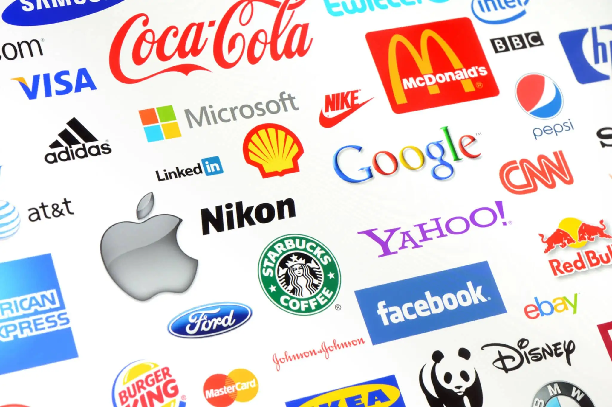

НА ГЛАВНУЮ
Разработка сайтов
Веб-разработка — это процесс проектирования, разработки и управления сайтами. Ваш любимый интернет-бутик? Платформа социальных сетей? Стриминговый сервис? Вы можете поблагодарить тысячи (или миллионы) строк кода и веб-разработчиков, которые их написали.
Веб-разработка в наши дни — это общий термин, который охватывает все, от макета сайта до отладки его бета-версии. Разработка включает в себя не только веб-дизайн, но и элементы программирования, кибербезопасности и обслуживания. Это торговля, которая требует не только здравой логики, но и творческого чутья, чтобы создать что-то запоминающееся.
Хотя веб-разработка включает в себя множество вещей, она начинается с понимания того, как работает сеть, как наши творения взаимодействуют с ней и с конечным пользователем. Технологии HTML, CSS и JavaScript , являются строительными блоками, но лишь немногие веб-разработчики могут на этом остановиться — по крайней мере, на данный момент. Есть варианты и визуальной сборки сайта, и многие из них уже достаточно надежны.
Продвижение сайтов
SEO — основной источник трафика для многих сайтов. Его называют условно-бесплатным способом продвижения, потому что владельцы сайтов не платят за каждый переход на ресурс, как при использовании рекламы. При сравнительно небольших затратах SEO способно приносить десятки тысяч переходов в месяц.
SEO — это работы по оптимизации сайта под требования поисковых систем. Простыми словами — это набор методов для продвижения страниц сайта в топ-10 поисковой выдачи. Чем больше страниц будет в топе, тем больше трафика получит сайт.
Допустим, кто-то ищет в интернете информацию о том, как выбрать стиль дизайна интерьера. Поисковая система распознает запрос и выдаст релевантные страницы со статьями на эту тему. SEO нужно, чтобы «показать» поисковой системе, что на странице нашего сайта есть нужная пользователям информация. Тогда поисковые системы включат в выдачу и её.
Реклама в интернете
Реклама в интернете (англ. internet advertising) — это комплекс инструментов, которые компании используют для продвижения бренда и повышения продаж.
Сегодня маркетологи чаще всего размещают рекламу в интернете. В России, по данным АКАР, за 2022 год 83% от общего объема выручки рынка рекламы пришелся на интернет-рекламу. Из 392 млрд рублей компании вложили 324,9 млрд в digital-сегмент.
Интернет-реклама удобна тем, что предлагает большое количество инструментов и подробную статистику по ним. Например, маркетолог еще во время кампании может оценить, какой канал дает наибольшую конверсию в подписчиков. И пока бюджет не растратили впустую, отключить или перенастроить другие объявления.
Поддержка сайтов
Поддержка сайта — комплекс задач, который связан с обеспечением стабильной работы проекта. В большинстве случаев речь идёт о технической поддержке. Наполнение контентом, изменение дизайна и прочие непрофильные услуги веб-разработчики редко берут на себя.
Крупные компании обычно выбирают для технической поддержки веб-студии, которые хорошо зарекомендовали себя на рынке. У них есть репутация, отзывы и гарантии, закреплённые в договоре на предоставление услуг. Что касается фрилансеров, то всё зависит от позиционирования специалиста и его узнаваемости в digital-мире.
Разработчик, который постоянно следит за сайтом, как ангел-хранитель. В его интересах устранить неполадки как можно быстрее. Если он не сможет решить проблему и от этого пострадают клиенты или репутация компании, он может лишиться части денег.
Разработка логотипа и фирменного стиля

Разработка логотипа - это визуальное выражение концепта и идеи торговой марки. Создание логотипа или создание товарного знака– заключается в создании знака или символа. Он прост, гармоничен, вызывает ассоциативный ряд, закладывает в подсознании потребителя образ продукта. Качественный логотип - это символ, по которому можно прочитать идею бренда, миссию компании, ее отношение к потребителю и позиционирование на рынке.
Фирменный стиль — совокупность вербальных и невербальных элементов, которые передают индивидуальность и идею бизнеса, предназначение продукта, отношение компании к своим клиентам.
Множество компаний производят отличные товары, оказывают качественные услуги и ни в чем не уступают конкурентам. Но люди запоминают лишь те из них, которым удается из перечисленных элементов создать цельный фирменный стиль и логотип.
Разработка мобильных приложений

Разработка приложений для мобильных устройств — это процесс, при котором приложения разрабатываются для небольших портативных устройств, таких, как КПК, смартфоны или сотовые телефоны. Эти приложения могут быть предустановлены на устройство в процессе производства, загружены пользователем с помощью различных платформ для распространения ПО или являться веб-приложениями, которые обрабатываются на стороне клиента (JavaScript) или сервера.
Процесс создания и выпуска мобильных приложений часто понимается как серия шагов или этапов. На этих этапах процесса разработки мобильного приложения задействовано множество разных людей и специалистов внутри организации, включая бизнес, маркетинг, дизайн и инженерию.
Организации тратят от трех до девяти месяцев (а при необходимости и дольше) на разработку мобильных приложений. Область и возможности приложения влияют на сроки процесса разработки мобильного приложения.